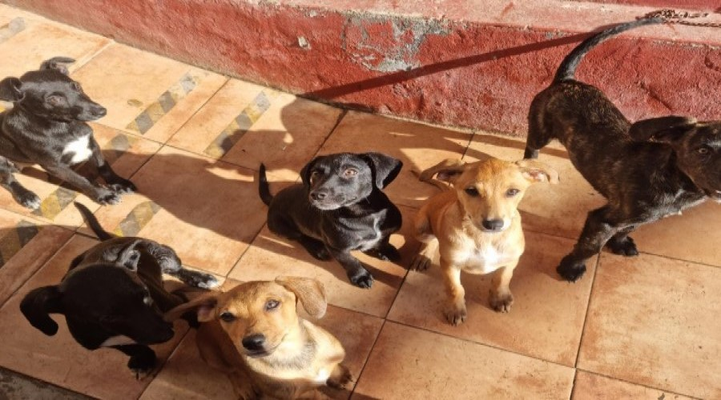

Volunteer
I've always loved animals, so when some friends asked me to volunteer as a dog sitter, I couldn't say no. I started volunteering at the beginning of February 2022 and it's really great. Taking care of and helping dogs, puppies, rabbits and cats to find a home for their lifes is an incredible and very rewarding job, the only bad thing is that you end up falling in love with all the puppies and you will want to take them all home with you.
The name of the association is ADA. This is the link